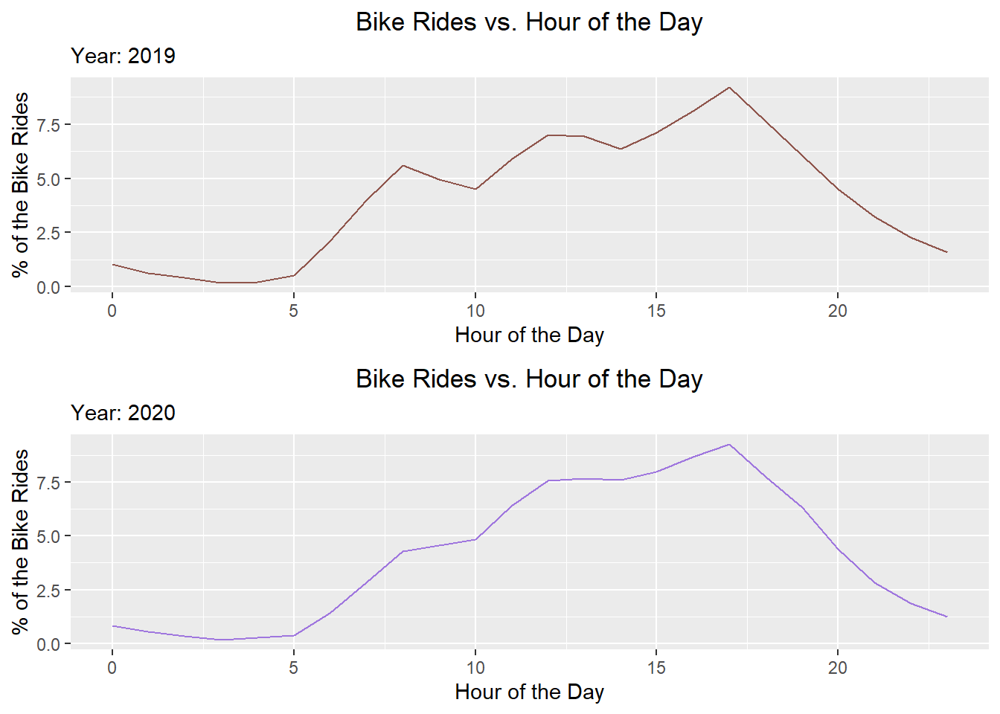

bike share in LA
I have always been interested in knowing the current status of bike sharing in the US. I am a bike share enthusiast and used a lot of bike sharing service in China. The other day I found the data on bike share in LA and had the urge to analyze it.
The data comes from Metrobike share website at here.
# read in the data
files <- list.files(path = "data", pattern = ".q[0-9].csv$", full.names = TRUE)
bike_share_1 <- lapply(files, read.csv)
# the original datasets have different formats of datetime, now convert the datetime to the same format
for(i in seq_along(bike_share_1)) {
bike_share_1[[i]]$start_time <- str_replace(bike_share_1[[i]]$start_time, "([0-9]+)-([0-9]+)-([0-9]+)\\s([0-9]+):([0-9]+)(:[0-9]+)?", "\\2/\\3/\\1 \\4:\\5")
bike_share_1[[i]]$end_time <- str_replace(bike_share_1[[i]]$end_time, "([0-9]+)-([0-9]+)-([0-9]+)\\s([0-9]+):([0-9]+)(:[0-9]+)?", "\\2/\\3/\\1 \\4:\\5")
}
# combine all the data frames
bike_share <- do.call("rbind", bike_share_1)
# see if the combined dataset is correct by checking its number of rows
nrow(bike_share)## [1] 420935#check the total number of rows before the data is combined
row_count <- 0
for(i in seq_along(bike_share_1)) {
row_count <- row_count + nrow(bike_share_1[[i]])
}
row_count## [1] 420935Data Preparation
str(bike_share)## 'data.frame': 420935 obs. of 15 variables:
## $ trip_id : int 112536773 112536772 112538689 112538688 112538687 112538686 112538685 112537730 112538445 112537729 ...
## $ duration : int 7 6 32 30 28 28 27 7 19 6 ...
## $ start_time : chr "01/01/2019 00:07" "01/01/2019 00:08" "01/01/2019 00:18" "01/01/2019 00:20" ...
## $ end_time : chr "01/01/2019 00:14" "01/01/2019 00:14" "01/01/2019 00:50" "01/01/2019 00:50" ...
## $ start_station : int 3046 3046 3030 3030 3030 3030 3030 3029 3030 3029 ...
## $ start_lat : num 34.1 34.1 34.1 34.1 34.1 ...
## $ start_lon : num -118 -118 -118 -118 -118 ...
## $ end_station : int 3051 3051 3075 3075 3075 3075 3075 3038 3031 3038 ...
## $ end_lat : num 34 34 34 34 34 ...
## $ end_lon : num -118 -118 -118 -118 -118 ...
## $ bike_id : chr "06468" "12311" "05992" "05860" ...
## $ plan_duration : int 1 1 1 1 1 1 1 1 1 1 ...
## $ trip_route_category: chr "One Way" "One Way" "One Way" "One Way" ...
## $ passholder_type : chr "Walk-up" "Walk-up" "Walk-up" "Walk-up" ...
## $ bike_type : chr "standard" "standard" "standard" "standard" ...summary(bike_share)## trip_id duration start_time end_time start_station
## Min. :112536772 Min. : 1.00 Length:420935 Length:420935 Min. :3000
## 1st Qu.:123469693 1st Qu.: 6.00 Class :character Class :character 1st Qu.:3018
## Median :129815257 Median : 12.00 Mode :character Mode :character Median :3047
## Mean :129577499 Mean : 31.57 Mean :3413
## 3rd Qu.:136496204 3rd Qu.: 23.00 3rd Qu.:4247
## Max. :144432075 Max. :1440.00 Max. :4524
##
## start_lat start_lon end_station end_lat end_lon
## Min. :33.71 Min. :-118.5 Min. :3000 Min. :33.71 Min. :-118.5
## 1st Qu.:34.04 1st Qu.:-118.3 1st Qu.:3029 1st Qu.:34.04 1st Qu.:-118.3
## Median :34.05 Median :-118.3 Median :3062 Median :34.05 Median :-118.3
## Mean :34.04 Mean :-118.3 Mean :3480 Mean :34.04 Mean :-118.3
## 3rd Qu.:34.05 3rd Qu.:-118.2 3rd Qu.:4285 3rd Qu.:34.05 3rd Qu.:-118.2
## Max. :34.19 Max. :-118.2 Max. :4524 Max. :34.19 Max. :-118.0
## NA's :47950 NA's :47950 NA's :15629 NA's :15629
## bike_id plan_duration trip_route_category passholder_type bike_type
## Length:420935 Min. : 1.00 Length:420935 Length:420935 Length:420935
## Class :character 1st Qu.: 1.00 Class :character Class :character Class :character
## Mode :character Median : 30.00 Mode :character Mode :character Mode :character
## Mean : 58.08
## 3rd Qu.: 30.00
## Max. :999.00
## # check No. of NAs
map_dbl(bike_share, function(x) sum(is.na(x)))## trip_id duration start_time end_time
## 0 0 0 0
## start_station start_lat start_lon end_station
## 0 47950 47950 0
## end_lat end_lon bike_id plan_duration
## 15629 15629 0 0
## trip_route_category passholder_type bike_type
## 0 0 0# check the percentage of missing values
map_dbl(bike_share, function(x) mean(is.na(x)))## trip_id duration start_time end_time
## 0.00000000 0.00000000 0.00000000 0.00000000
## start_station start_lat start_lon end_station
## 0.00000000 0.11391307 0.11391307 0.00000000
## end_lat end_lon bike_id plan_duration
## 0.03712925 0.03712925 0.00000000 0.00000000
## trip_route_category passholder_type bike_type
## 0.00000000 0.00000000 0.00000000# convert start_time, end_time to the correct data type
bike_share <- bike_share %>%
mutate(start_time=mdy_hm(start_time), end_time=mdy_hm(end_time))
# check if the date type has been converted
class(bike_share$start_time)## [1] "POSIXct" "POSIXt"class(bike_share$end_time)## [1] "POSIXct" "POSIXt"# check data consistency
sum((bike_share$start_time%--%bike_share$end_time)%/%minutes(1) != bike_share$duration)## [1] 3611# there are data points where duration is not equal the difference between start time and end time, let's fix that by mutating the duration variable
bike_share <- bike_share %>%
mutate(duration=(bike_share$start_time%--%bike_share$end_time)%/%minutes(1))
str(bike_share)## 'data.frame': 420935 obs. of 15 variables:
## $ trip_id : int 112536773 112536772 112538689 112538688 112538687 112538686 112538685 112537730 112538445 112537729 ...
## $ duration : num 7 6 32 30 28 28 27 7 19 6 ...
## $ start_time : POSIXct, format: "2019-01-01 00:07:00" "2019-01-01 00:08:00" "2019-01-01 00:18:00" ...
## $ end_time : POSIXct, format: "2019-01-01 00:14:00" "2019-01-01 00:14:00" "2019-01-01 00:50:00" ...
## $ start_station : int 3046 3046 3030 3030 3030 3030 3030 3029 3030 3029 ...
## $ start_lat : num 34.1 34.1 34.1 34.1 34.1 ...
## $ start_lon : num -118 -118 -118 -118 -118 ...
## $ end_station : int 3051 3051 3075 3075 3075 3075 3075 3038 3031 3038 ...
## $ end_lat : num 34 34 34 34 34 ...
## $ end_lon : num -118 -118 -118 -118 -118 ...
## $ bike_id : chr "06468" "12311" "05992" "05860" ...
## $ plan_duration : int 1 1 1 1 1 1 1 1 1 1 ...
## $ trip_route_category: chr "One Way" "One Way" "One Way" "One Way" ...
## $ passholder_type : chr "Walk-up" "Walk-up" "Walk-up" "Walk-up" ...
## $ bike_type : chr "standard" "standard" "standard" "standard" ...bike_share %>%
filter(passholder_type=="Walk-up") %>%
count(plan_duration)## Warning: `...` is not empty.
##
## We detected these problematic arguments:
## * `needs_dots`
##
## These dots only exist to allow future extensions and should be empty.
## Did you misspecify an argument?## # A tibble: 3 x 2
## plan_duration n
## <int> <int>
## 1 1 89289
## 2 30 2793
## 3 365 10507# based on the data description on Metrobike share website, 0 is used for a single ride plan (Walk-up). There are loads of walk up plans that are tagged as duration other than 0. Fix this by mutating plan_duration variable.
bike_share <- bike_share %>%
mutate(plan_duration = if_else(bike_share$passholder_type=="Walk-up", 0L, bike_share$plan_duration))
bike_share %>%
count(plan_duration, passholder_type)## Warning: `...` is not empty.
##
## We detected these problematic arguments:
## * `needs_dots`
##
## These dots only exist to allow future extensions and should be empty.
## Did you misspecify an argument?## # A tibble: 6 x 3
## plan_duration passholder_type n
## <int> <chr> <int>
## 1 0 Walk-up 102589
## 2 1 One Day Pass 24939
## 3 30 Monthly Pass 259012
## 4 365 Annual Pass 33930
## 5 365 Flex Pass 320
## 6 999 Testing 145# There are testing data in the data frame, needs to be removed.
bike_share <- bike_share %>%
filter(passholder_type != "Testing")
unique(bike_share$passholder_type)## [1] "Walk-up" "Monthly Pass" "Annual Pass" "One Day Pass" "Flex Pass"str(bike_share)## 'data.frame': 420790 obs. of 15 variables:
## $ trip_id : int 112536773 112536772 112538689 112538688 112538687 112538686 112538685 112537730 112538445 112537729 ...
## $ duration : num 7 6 32 30 28 28 27 7 19 6 ...
## $ start_time : POSIXct, format: "2019-01-01 00:07:00" "2019-01-01 00:08:00" "2019-01-01 00:18:00" ...
## $ end_time : POSIXct, format: "2019-01-01 00:14:00" "2019-01-01 00:14:00" "2019-01-01 00:50:00" ...
## $ start_station : int 3046 3046 3030 3030 3030 3030 3030 3029 3030 3029 ...
## $ start_lat : num 34.1 34.1 34.1 34.1 34.1 ...
## $ start_lon : num -118 -118 -118 -118 -118 ...
## $ end_station : int 3051 3051 3075 3075 3075 3075 3075 3038 3031 3038 ...
## $ end_lat : num 34 34 34 34 34 ...
## $ end_lon : num -118 -118 -118 -118 -118 ...
## $ bike_id : chr "06468" "12311" "05992" "05860" ...
## $ plan_duration : int 0 0 0 0 0 0 0 0 0 0 ...
## $ trip_route_category: chr "One Way" "One Way" "One Way" "One Way" ...
## $ passholder_type : chr "Walk-up" "Walk-up" "Walk-up" "Walk-up" ...
## $ bike_type : chr "standard" "standard" "standard" "standard" ...# Obviously, plan_duration, trip_route_category, passholder_type, bike_type should be converted to factor type.
bike_share <- bike_share %>%
mutate(plan_duration=as.factor(plan_duration),
trip_route_category=as.factor(trip_route_category),
passholder_type=as.factor(passholder_type),
bike_type=as.factor(bike_type))
str(bike_share)## 'data.frame': 420790 obs. of 15 variables:
## $ trip_id : int 112536773 112536772 112538689 112538688 112538687 112538686 112538685 112537730 112538445 112537729 ...
## $ duration : num 7 6 32 30 28 28 27 7 19 6 ...
## $ start_time : POSIXct, format: "2019-01-01 00:07:00" "2019-01-01 00:08:00" "2019-01-01 00:18:00" ...
## $ end_time : POSIXct, format: "2019-01-01 00:14:00" "2019-01-01 00:14:00" "2019-01-01 00:50:00" ...
## $ start_station : int 3046 3046 3030 3030 3030 3030 3030 3029 3030 3029 ...
## $ start_lat : num 34.1 34.1 34.1 34.1 34.1 ...
## $ start_lon : num -118 -118 -118 -118 -118 ...
## $ end_station : int 3051 3051 3075 3075 3075 3075 3075 3038 3031 3038 ...
## $ end_lat : num 34 34 34 34 34 ...
## $ end_lon : num -118 -118 -118 -118 -118 ...
## $ bike_id : chr "06468" "12311" "05992" "05860" ...
## $ plan_duration : Factor w/ 4 levels "0","1","30","365": 1 1 1 1 1 1 1 1 1 1 ...
## $ trip_route_category: Factor w/ 2 levels "One Way","Round Trip": 1 1 1 1 1 1 1 1 1 1 ...
## $ passholder_type : Factor w/ 5 levels "Annual Pass",..: 5 5 5 5 5 5 5 5 5 5 ...
## $ bike_type : Factor w/ 3 levels "electric","smart",..: 3 3 3 3 3 3 3 3 3 3 ...Exploratory Data Analysis
Frequency Distribution of Duration
# set all titles in plots to be centered
theme_update(plot.title=element_text(hjust = 0.5))
# create histogram of durations
ggplot(bike_share, aes(duration))+geom_histogram(binwidth = 10)+labs(x="Duration of Each Ride", y="Number of Rides", title = "Frequency of Duration")ggplot(bike_share, aes(duration))+geom_freqpoly(bin=50)## Warning: Ignoring unknown parameters: bin## `stat_bin()` using `bins = 30`. Pick better value with `binwidth`.str(bike_share)## 'data.frame': 420790 obs. of 15 variables:
## $ trip_id : int 112536773 112536772 112538689 112538688 112538687 112538686 112538685 112537730 112538445 112537729 ...
## $ duration : num 7 6 32 30 28 28 27 7 19 6 ...
## $ start_time : POSIXct, format: "2019-01-01 00:07:00" "2019-01-01 00:08:00" "2019-01-01 00:18:00" ...
## $ end_time : POSIXct, format: "2019-01-01 00:14:00" "2019-01-01 00:14:00" "2019-01-01 00:50:00" ...
## $ start_station : int 3046 3046 3030 3030 3030 3030 3030 3029 3030 3029 ...
## $ start_lat : num 34.1 34.1 34.1 34.1 34.1 ...
## $ start_lon : num -118 -118 -118 -118 -118 ...
## $ end_station : int 3051 3051 3075 3075 3075 3075 3075 3038 3031 3038 ...
## $ end_lat : num 34 34 34 34 34 ...
## $ end_lon : num -118 -118 -118 -118 -118 ...
## $ bike_id : chr "06468" "12311" "05992" "05860" ...
## $ plan_duration : Factor w/ 4 levels "0","1","30","365": 1 1 1 1 1 1 1 1 1 1 ...
## $ trip_route_category: Factor w/ 2 levels "One Way","Round Trip": 1 1 1 1 1 1 1 1 1 1 ...
## $ passholder_type : Factor w/ 5 levels "Annual Pass",..: 5 5 5 5 5 5 5 5 5 5 ...
## $ bike_type : Factor w/ 3 levels "electric","smart",..: 3 3 3 3 3 3 3 3 3 3 ...range(bike_share$duration)## [1] 0 88787Apparently, the range shows there are extreme values under duration. It ranges from 0 to more than 80,000 minutes, which is over 60 days. Someone cannot ride a bicycle for that long, at least in a city with a shared bike. according to the metroshare website, a good range should be from 1 minute to 1440 minutes(24 hours).
Even with a range between 1 and 1440, it is difficult to see the distribution. We will have to narrow the range to get a better view.
bike_share %>%
dplyr::filter(duration<=250&duration>=1) %>%
mutate(itl=cut_width(duration, 10, boundary=10, closed = "left")) %>%
count(itl) %>%
mutate(pct=n/sum(n)*100) %>%
arrange(itl) %>%
ggplot(aes(x=itl))+geom_bar(aes(y=pct), stat = "identity", fill="green", color="black")+labs(x="Duration of Each Ride(Minutes)", y="% of Rides", title = "Duration Breakdown")+theme(axis.text.x = element_text(angle=70,hjust =1 ,size=8))+geom_text(aes(label=sprintf("%0.2f", pct), y=pct+2), size=2.5, hjust=0.5)
The duration histogram aligns with my expectation that it peaks in count at the shorter rides. The number of rides peak at the duration of around 1-10 minutes. The distribution has a long tail at the upper end. I expect those long rides are usually done by tourists with walk-up or one-day pass type. I will examine this later on. For this histogram, I will create a better plot showing the percentage each interval is of all durations.
##Station Frequency
# read in the station data
stations <- read_csv("data/metro-bike-share-stations-2020-07-01.csv")
# join bike_share data frame and stations data frame
bike_share_duration <- bike_share %>%
filter(duration>0 & duration<=1440)
bike_share_station <- bike_share_duration %>%
left_join(stations %>% select(-Go_live_date, -Status), by=c("start_station"="Station_ID")) %>%
rename(start_station_name="Station_Name", start_station_region="Region")
bike_share_station<- bike_share_station %>%
left_join(stations %>% select(-Go_live_date, -Status), by=c("end_station"="Station_ID")) %>%
rename(end_station_name="Station_Name", end_station_region="Region")
str(bike_share_station)## 'data.frame': 418936 obs. of 19 variables:
## $ trip_id : int 112536773 112536772 112538689 112538688 112538687 112538686 112538685 112537730 112538445 112537729 ...
## $ duration : num 7 6 32 30 28 28 27 7 19 6 ...
## $ start_time : POSIXct, format: "2019-01-01 00:07:00" "2019-01-01 00:08:00" "2019-01-01 00:18:00" ...
## $ end_time : POSIXct, format: "2019-01-01 00:14:00" "2019-01-01 00:14:00" "2019-01-01 00:50:00" ...
## $ start_station : num 3046 3046 3030 3030 3030 ...
## $ start_lat : num 34.1 34.1 34.1 34.1 34.1 ...
## $ start_lon : num -118 -118 -118 -118 -118 ...
## $ end_station : num 3051 3051 3075 3075 3075 ...
## $ end_lat : num 34 34 34 34 34 ...
## $ end_lon : num -118 -118 -118 -118 -118 ...
## $ bike_id : chr "06468" "12311" "05992" "05860" ...
## $ plan_duration : Factor w/ 4 levels "0","1","30","365": 1 1 1 1 1 1 1 1 1 1 ...
## $ trip_route_category : Factor w/ 2 levels "One Way","Round Trip": 1 1 1 1 1 1 1 1 1 1 ...
## $ passholder_type : Factor w/ 5 levels "Annual Pass",..: 5 5 5 5 5 5 5 5 5 5 ...
## $ bike_type : Factor w/ 3 levels "electric","smart",..: 3 3 3 3 3 3 3 3 3 3 ...
## $ start_station_name : chr "2nd & Hill" "2nd & Hill" "Main & 1st" "Main & 1st" ...
## $ start_station_region: chr "DTLA" "DTLA" "DTLA" "DTLA" ...
## $ end_station_name : chr "7th & Broadway" "7th & Broadway" "Broadway & 9th" "Broadway & 9th" ...
## $ end_station_region : chr "DTLA" "DTLA" "DTLA" "DTLA" ...first_10_start <- bike_share_station %>%
count(start_station_region, start_station_name) %>%
arrange(desc(n)) %>%
head(10)
ggplot(first_10_start)+geom_bar(aes(x=fct_reorder(as.factor(start_station_name),n), y=n, fill=as.factor(start_station_region)), stat = "identity")+theme_economist_white()+scale_fill_manual(name="Region", values = c("#347a94", "#29a96b", "#ffa600"))+labs(x="", y="", title = "Start Station Distribution (First 10)")+coord_flip()The Virtual Station, according to the metroshare website, is used by staff to check in or check out a bike remotely for a special event or in a situation in which a bike could not otherwise be checked in or out to a station. And the rest of stations are mostly located in downtown LA, except 1 is in Westside.
End Station
Now let’s take a look at the distribution of end stations.
first_10_end <- bike_share_station %>%
count(end_station_region, end_station_name) %>%
arrange(desc(n)) %>%
head(10)
ggplot(first_10_end)+geom_bar(aes(x=fct_reorder(as.factor(end_station_name),n), y=n, fill=as.factor(end_station_region)), stat = "identity")+theme_economist_white()+scale_fill_manual(name="Region", values = c("#347a94", "#ffa600"))+labs(x="", y="", title = "End Station Distribution (First 10)")+coord_flip()Similarly, the end stations are all located in downtown LA with one exception in Westside.
Trip Route Frequency
ggplot(bike_share_duration, aes(as.factor(trip_route_category)))+geom_bar(aes(y=..prop.., group=1), fill="#cccf6e", color="black", width = 0.5)+labs(x="", title = "Proportions of Trip Route")One-way trips account for most of the rides. More than 80% of rides are one way.
Passholder Type
ggplot(bike_share)+geom_bar(aes(x=passholder_type, y=..prop.., group=1), fill="#9da0d1", color="black")+labs(x="", title = "Proportions of Passholer Types")More than 60% of the rides used Monthly Pass, over 20% are with Walk-up and comes next is Annual Pass with nearly 10%.
Bike Types
ggplot(bike_share)+geom_bar(aes(x=bike_type, y=..prop.., group=1), fill="#fea884", color="black", width=0.5)+labs(x="", title = "Proportions of Bike Types")Nearly half of the rides were done with standard bicycles and around 37% were with electric bikes.
Bike Rides at Different Regions
ggplot(bike_share_station, aes(x=as.factor(start_station_region), y=..prop..))+geom_bar(aes(group=1), fill="peru", color="black")+labs(x="", y="", title="Bike Rides Start Regions vs Proportions of Bike Rides ")Not surprisingly, over 70% of the rides started in downtown LA. There are NA values, let’s extract those rows and take a look.
bike_share_station %>%
filter(is.na(start_station_region)) %>%
head()## trip_id duration start_time end_time start_station start_lat start_lon
## 1 119420671 58 2019-04-13 11:39:00 2019-04-13 12:37:00 4363 34.03046 -118.3891
## 2 119623383 18 2019-04-16 12:47:00 2019-04-16 13:05:00 4363 34.03046 -118.3891
## 3 120678427 3 2019-05-02 18:56:00 2019-05-02 18:59:00 4327 34.17245 -118.3704
## 4 120870725 58 2019-05-05 14:31:00 2019-05-05 15:29:00 4363 34.03046 -118.3891
## 5 121553263 30 2019-05-15 17:58:00 2019-05-15 18:28:00 4108 34.02589 -118.2382
## 6 121736260 8 2019-05-18 13:40:00 2019-05-18 13:48:00 4363 34.03046 -118.3891
## end_station end_lat end_lon bike_id plan_duration trip_route_category passholder_type
## 1 4381 34.00033 -118.4023 16239 0 One Way Walk-up
## 2 4330 34.02569 -118.3953 15386 365 One Way Annual Pass
## 3 4332 34.02948 -118.4105 16098 0 One Way Walk-up
## 4 4346 33.98434 -118.4715 15723 0 One Way Walk-up
## 5 3000 NA NA 18854 365 One Way Annual Pass
## 6 4372 34.02788 -118.3889 15652 0 One Way Walk-up
## bike_type start_station_name start_station_region end_station_name
## 1 smart <NA> <NA> Sepulveda & Lucerne
## 2 smart <NA> <NA> Bagley & Venice
## 3 smart <NA> <NA> National & Motor
## 4 smart <NA> <NA> Ocean Front Walk & North Venice
## 5 electric <NA> <NA> Virtual Station
## 6 smart <NA> <NA> Public Bike Rack: Culver City Expo Line
## end_station_region
## 1 Westside
## 2 Westside
## 3 Westside
## 4 Westside
## 5 N/A
## 6 WestsideIt’s only 3o data points without a valid start station name, we can drop these data. Also a similar approach shows that the start station region with N/A value are mostly for virtual station, which is used for staff to check in or out for events. These data points can also be dropped. In addition, the free bikes looks weird. Let’s extract those data points and take a close look.
bike_share_station %>%
filter(start_station_region=="Free Bikes") %>%
head()## trip_id duration start_time end_time start_station start_lat start_lon
## 1 116436041 1 2019-02-28 09:59:00 2019-02-28 10:00:00 4285 NA NA
## 2 116443146 55 2019-02-28 11:45:00 2019-02-28 12:40:00 4285 NA NA
## 3 116442943 1 2019-02-28 12:37:00 2019-02-28 12:38:00 4285 NA NA
## 4 116449658 66 2019-02-28 14:25:00 2019-02-28 15:31:00 4285 NA NA
## 5 116450754 1 2019-02-28 15:55:00 2019-02-28 15:56:00 4285 NA NA
## 6 116455502 18 2019-02-28 17:25:00 2019-02-28 17:43:00 4285 NA NA
## end_station end_lat end_lon bike_id plan_duration trip_route_category passholder_type
## 1 4285 NA NA 15573 365 Round Trip Annual Pass
## 2 4285 NA NA 15157 0 Round Trip Walk-up
## 3 3000 NA NA 15892 365 One Way Annual Pass
## 4 4285 NA NA 16210 0 Round Trip Walk-up
## 5 3000 NA NA 15668 365 One Way Annual Pass
## 6 4344 34.01431 -118.4913 15157 0 One Way Walk-up
## bike_type start_station_name start_station_region
## 1 smart Metro Bike Share Free Bikes Free Bikes
## 2 smart Metro Bike Share Free Bikes Free Bikes
## 3 smart Metro Bike Share Free Bikes Free Bikes
## 4 smart Metro Bike Share Free Bikes Free Bikes
## 5 smart Metro Bike Share Free Bikes Free Bikes
## 6 smart Metro Bike Share Free Bikes Free Bikes
## end_station_name end_station_region
## 1 Metro Bike Share Free Bikes Free Bikes
## 2 Metro Bike Share Free Bikes Free Bikes
## 3 Virtual Station N/A
## 4 Metro Bike Share Free Bikes Free Bikes
## 5 Virtual Station N/A
## 6 Downtown Santa Monica Expo Line Station WestsideThe station providing free bikes consists of less than 1% of the total bike rides, which can be dropped. The refined plot is as follows:
ggplot(bike_share_station %>% filter(start_station_region %in% c("DTLA", "North Hollywood", "Port of LA", "Westside")), aes(x=as.factor(start_station_region), y=..prop..))+geom_bar(aes(group=1), fill="peru", color="black")+labs(x="", y="", title="Bike Rides Start Regions vs Proportions of Bike Rides ")Time series analysis
# extract year, month, day and hour from the start_time variable and create new variables for them.
bike_share_duration <- bike_share_duration %>%
mutate(year_start=year(start_time),
start_date=as_date(start_time),
month_start=month(start_time, label = TRUE),
day_of_the_week=wday(start_time, label = TRUE, week_start = 1),
hour=hour(start_time))
str(bike_share_duration)## 'data.frame': 418936 obs. of 20 variables:
## $ trip_id : int 112536773 112536772 112538689 112538688 112538687 112538686 112538685 112537730 112538445 112537729 ...
## $ duration : num 7 6 32 30 28 28 27 7 19 6 ...
## $ start_time : POSIXct, format: "2019-01-01 00:07:00" "2019-01-01 00:08:00" "2019-01-01 00:18:00" ...
## $ end_time : POSIXct, format: "2019-01-01 00:14:00" "2019-01-01 00:14:00" "2019-01-01 00:50:00" ...
## $ start_station : int 3046 3046 3030 3030 3030 3030 3030 3029 3030 3029 ...
## $ start_lat : num 34.1 34.1 34.1 34.1 34.1 ...
## $ start_lon : num -118 -118 -118 -118 -118 ...
## $ end_station : int 3051 3051 3075 3075 3075 3075 3075 3038 3031 3038 ...
## $ end_lat : num 34 34 34 34 34 ...
## $ end_lon : num -118 -118 -118 -118 -118 ...
## $ bike_id : chr "06468" "12311" "05992" "05860" ...
## $ plan_duration : Factor w/ 4 levels "0","1","30","365": 1 1 1 1 1 1 1 1 1 1 ...
## $ trip_route_category: Factor w/ 2 levels "One Way","Round Trip": 1 1 1 1 1 1 1 1 1 1 ...
## $ passholder_type : Factor w/ 5 levels "Annual Pass",..: 5 5 5 5 5 5 5 5 5 5 ...
## $ bike_type : Factor w/ 3 levels "electric","smart",..: 3 3 3 3 3 3 3 3 3 3 ...
## $ year_start : num 2019 2019 2019 2019 2019 ...
## $ start_date : Date, format: "2019-01-01" "2019-01-01" "2019-01-01" ...
## $ month_start : Ord.factor w/ 12 levels "Jan"<"Feb"<"Mar"<..: 1 1 1 1 1 1 1 1 1 1 ...
## $ day_of_the_week : Ord.factor w/ 7 levels "Mon"<"Tue"<"Wed"<..: 2 2 2 2 2 2 2 2 2 2 ...
## $ hour : int 0 0 0 0 0 0 0 0 0 0 ...bike_share_duration %>%
count(year_start, month_start) %>%
ggplot(aes(month_start, n, group=as.factor(year_start)))+geom_point(aes(color=as.factor(year_start)))+geom_line(aes(color=as.factor(year_start)))+labs(x="", y="", title = "Month vs Number of Rides")+scale_color_manual("Year", values = c("#42c494", "#cccf6e"))+theme(axis.text.x=element_text(angle = 60, face ="bold", size= 10,hjust=1))In 2019, the use of bike shar service had a sharp increase in summer with a peak in August, which is quite reasonable. People loves to go outdoors in summer and enjoy the summer time. 2020 started strong with more rides than the same time in 2019, but then Coronavirus pandemic hit and in March, California implemented strict stay at home order, the number slumped in March and continued to decrease in April. As California started to reopen slowly in May, you can see the number went up but quickly dropped to where it was in April, probably due to the surge of infection cases after the reopening.
the Use of Bikes on Different Days Throughout the Week
# year 2019
p1 <- bike_share_duration %>%
inner_join(bike_share_station, by=c("trip_id")) %>%
filter(year_start==2019, start_station_region %in% c("DTLA", "North Hollywood", "Port of LA", "Westside")) %>%
count(start_station_region, day_of_the_week) %>%
mutate(pct=n/sum(n)*100) %>%
ggplot(aes(x=day_of_the_week,y=pct))+geom_point(aes(color=as.factor(start_station_region)), alpha=0.4,size=4)+scale_y_continuous(breaks=seq(0,20,2))+scale_color_discrete("Regions")+labs(x="Day of the Week", y="% of the Bike Rides", title = "Percentage of Bike Rides vs. Day of the Week", subtitle = "Year: 2019")
# year 2020 from Jan through Jun
p2 <- bike_share_duration %>%
inner_join(bike_share_station, by=c("trip_id")) %>%
filter(year_start==2020, start_station_region %in% c("DTLA", "North Hollywood", "Port of LA", "Westside")) %>%
count(start_station_region, day_of_the_week) %>%
mutate(pct=n/sum(n)*100) %>%
ggplot(aes(x=day_of_the_week,y=pct))+geom_point(aes(color=as.factor(start_station_region)), alpha=0.4,size=4)+scale_y_continuous(breaks=seq(0,20,2))+scale_color_discrete("Regions")+labs(x="Day of the Week", y="% of the Bike Rides", title = "Percentage of Bike Rides vs. Day of the Week", subtitle = "Year: 2020")
grid.arrange(p1, p2, ncol = 1)We find in both year 2019 and 2020:
During the course of the week, downtown LA has more bike rides on weekdays, and it dropped about 4% on weekends. It is probably due to the fact that downtown LA is home to many businesses and companies. Commuters ride bikes between offices and transits.
On the other hand, Westside sees a slight increase on weekends.
the Use of Bikes Throughout the day
# year 2019
p3 <- bike_share_duration %>%
filter(year_start==2019) %>%
count(hour) %>%
ggplot(aes(x=hour,y=n))+geom_point(color="#8cbcac")+labs(x="Hour of the Day", y="Number of Bike Rides", title = "Bike Rides vs. Hour of the Day", subtitle = "Year: 2019")+geom_line(color="#488f31")
# year 2020 from Jan through Jun
p4 <- bike_share_duration %>%
filter(year_start==2020) %>%
count(hour) %>%
ggplot(aes(x=hour,y=n))+geom_point(color="#ec9c9d")+labs(x="Hour of the Day", y="Number of Bike Rides", title = "Bike Rides vs. Hour of the Day", subtitle = "Year: 2020")+geom_line(color="#de425b")
grid.arrange(p3, p4, nrow=1)We can see that:
Although the total number of rides differ for year 2019 and 2020(from Jan through Jun), the trend looks almost the same. Both of them peaked at around 5pm, which was the time people usually got off work.
During 0- 5am, in 2019, the total number of bike rides is no more than 10,000 during the whole year. In 2020, which only includes Jan through Jun, the number is around 3,000.
To create a better plot, we will use percentage to show the proportions.
# year 2019
p5 <- bike_share_duration %>%
filter(year_start==2019) %>%
count(hour) %>%
mutate(pct=n/sum(n)*100) %>%
ggplot(aes(hour, pct))+geom_freqpoly(stat = "identity", color="#8f554c")+labs(x="Hour of the Day", y="% of the Bike Rides", title="Bike Rides vs. Hour of the Day", subtitle = "Year: 2019")
# year 2020
p6 <- bike_share_duration %>%
filter(year_start==2020) %>%
count(hour) %>%
mutate(pct=n/sum(n)*100) %>%
ggplot(aes(hour, pct))+geom_freqpoly(stat = "identity", color="#9f76de")+labs(x="Hour of the Day", y="% of the Bike Rides", title="Bike Rides vs. Hour of the Day", subtitle = "Year: 2020")
grid.arrange(p5, p6, ncol=1)
We can also use a heatmap to show the distribution of bike rides through the lens of hour and day.
bike_share_duration %>%
count(day_of_the_week, hour) %>%
ggplot(aes(hour, day_of_the_week, fill=n))+geom_tile()+scale_fill_distiller(name="", palette = "Spectral")+labs(x="Hour of the Day", y="Day of the Week", title="Bike Use Throughout the Day and the week")
It’s fairly clear that it boasts the most bike rides at around 5 in the afternoon of every weekday.
the Variation of Median Duration Througout the Week
bike_share_duration %>%
group_by(day_of_the_week) %>%
mutate(median_duration=median(duration)) %>%
ggplot(aes(day_of_the_week, median_duration))+geom_point(size=4, color="peru")+labs(x="Day of the Week", y="Median Duration")It is interesting to see that the median duration is higher at weekends but it doesn’t come as as a surprise. People usually have more time to relax and explore the city at weekends. It is intriguing to examine what the median duration looks like across different regions.
bike_share_duration %>%
left_join(bike_share_station) %>%
filter(start_station_region %in% c("DTLA", "North Hollywood", "Port of LA", "Westside")) %>%
group_by(start_station_region, day_of_the_week) %>%
mutate(median_duration=median(duration)) %>%
ggplot(aes(day_of_the_week, median_duration))+geom_point(aes(color=as.factor(start_station_region)))+geom_line(aes(group=as.factor(start_station_region), color=as.factor(start_station_region)))+labs(x="Day of the Week", y="Median Duration(Minutes)")+scale_color_discrete(name="Regions")This plot shows that:
- Throughout the week, downtown LA has the lowest median duration.
- Except downtown LA, other regions have high median duration. It may be due to the fact that they are mostly sightseeing places for tourists.
- Even in downtown LA, the median duration increases at weekends.
Median duration vs. Passholer Type
bike_share_duration %>%
group_by(passholder_type) %>%
summarise(median_duration=median(duration)) %>%
ggplot(aes(passholder_type, median_duration))+geom_bar(stat = "identity", width=0.5, fill="peru", color="black")+labs(x="Passholder Type", y="Median Duration")One day pass and walk-up have higher median duration.
Start Station Region vs. Passholder Type
bike_share_station %>%
filter(start_station_region %in% c("DTLA", "North Hollywood", "Port of LA", "Westside")) %>%
count(start_station_region, passholder_type) %>%
ggplot(aes(start_station_region, passholder_type))+geom_tile(aes(fill=n))+scale_fill_distiller(name="Number of Bike Rides", palette = "Spectral")+theme_minimal()+labs(x="Start Station Region", y="Passholder Type")The most number of bike rides occur in downtown LA with monthly pass. The majority rides in Westside are done with walk-up type. It may be tourists who travel there and it makes sense that they only buy a one-time pass. Then we will take a look at how the median duration is across different start station regions and passholer types.
bike_share_station %>%
filter(start_station_region %in% c("DTLA", "North Hollywood", "Port of LA", "Westside")) %>%
group_by(start_station_region, passholder_type) %>%
summarise(median_duration=median(duration)) %>%
ggplot(aes(start_station_region, passholder_type))+geom_tile(aes(fill=median_duration))+scale_fill_distiller(name="Median Duration", palette = "Spectral")+theme_minimal()+labs(x="Start Station Region", y="Passholder Type")Not surprisingly, the longest median duration happens in Westside but what surprises me is that it is the Flex Pass that makes the highest median duration. More data is needed to look into this. It is reasonable that the second highest median duration happens in Port of LA with one day pass.
Bike Types vs. Median Duration
bike_share_duration %>%
group_by(bike_type) %>%
summarise(median_duration=median(duration)) %>%
ggplot(aes(bike_type, median_duration))+geom_point(size=4, color="red")+labs(x="Bike Type", y="Median Duration")This aligns with my expectation- longer rides are done with smart or electric and standard bikes are used for short rides.
df <- sqldf("SELECT start_station, start_lat, start_lon, start_station_name, count(*) AS count FROM bike_share_station GROUP BY start_station") %>%
filter(!is.na(start_lat) & !is.na(start_lon))
pal <- colorBin("PRGn", df$count, bins=9, alpha=1)
leaflet(df) %>%
addTiles() %>%
addCircleMarkers(lng=~start_lon, lat=~start_lat, weight = 1,
label = paste(df$start_station_name,df$count,sep = ":"),
color = ~pal(df$count), fillOpacity = 0.7) %>%
addLegend("bottomright", pal = pal, values = ~count, title = "Count", opacity = 1)From this map, we can see that most of rides happened in downtown LA. Moreover, it is easy to see there are a few stations in North Hollywood that only had less than 10 rides from beginning 2019 through June 2020. It may be worth considering to merge a couple of stations due to their low usage, thus to reduce the maintenance fees.
Some interesting data findings include:
The covid-19 pandemic has an impact on the use of bicycles. I expected that more rides would happen during this, but it turned out the opposite.
Downtown LA has more rides during the weekdays than weekends, which is probably due to less people commute at weekends. DTLA boasts a lot of businesses and offices.
Bike rides peak at around 5pm. This explains again the majority of bike riders are work commuters.
Most riders ride bicycles in downtown LA with a monthly pass.